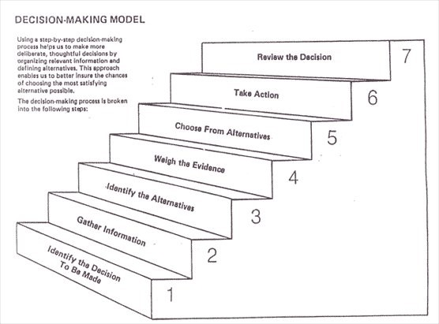
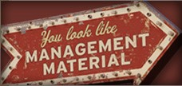
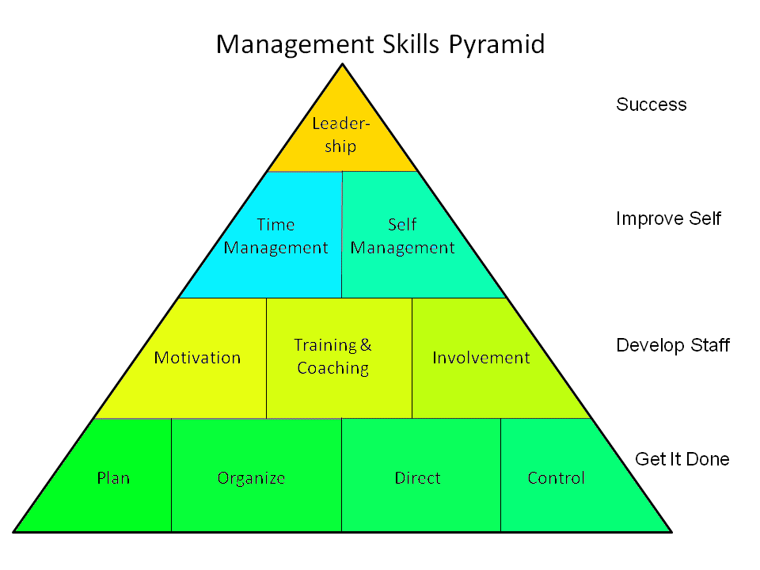
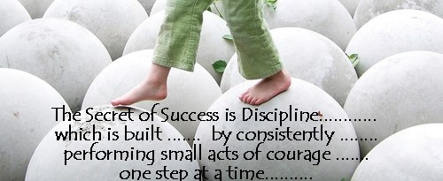
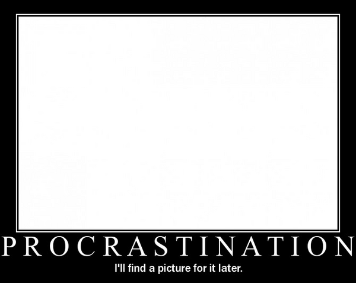
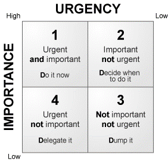
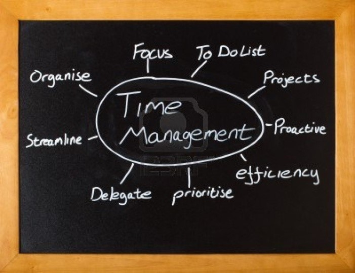
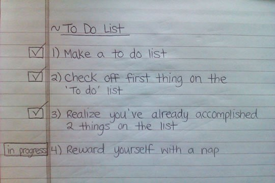
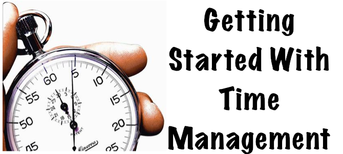

Managerial Section

Contents
- A Wednesday
- And You Thought Taking Decisions Is Child’s Play?
- What To Do About Anxiety?
- Are You ‘Managment’ Material?
- From School Children To College Students
- “He Who Lives Without Discipline Dies Without Honour!”
- Manage Your Time Before It Flies Away
- The Curious Case Of Time Table
- Time Managment
MOVIE TO MANAGEMENT: A WEDNESDAY
-Neha Singhal, BVCOE
Introduction
The movie is a narrative of Prakash Rathod, Commissioner of Police, Mumbai. The role, being played by Anupam Kher, brings about a fresh perspective about a police man, different from the usual lethargy and incompetence that we generally associate with one.
The story also involves the brilliant Naseeruddin Shah, who as a normal citizen, is fed up of the incompetency of our politicians and their interference into judicial system. He plays the role of a hoax terrorist. He blackmails and forces Anupam Kher into releasing four terrorists, who are responsible for heinous terrorist acts of the past, but are still either in the jail or moving around freely, primarily due to the incompetence of our judicial and political system.
He, after getting the terrorists released, kills them through a bomb blast. The movie gives a feeling of, “Yes, this is exactly what is to be done” and, “A good way to give them a taste of their own medicine”.
Managerial Context
The movie in itself has many instances when the production team has produced well thought-out plans. The way Naseeruddin Shah is named ‘Bastard’ by Anupam Kher and called that way throughout the movie, is something very unique to Bollywood. Also, the way some scenes are displayed in black and white for reflecting on past events and also flashbacks, involves the viewer into a deeper understanding about the movie.
The movie also presents an opportunity to analyse two very opposite roles from a managerial perspective, one that of Naseeruddin Shah and the other that of Anupam Kher.
Naseeruddin Shah
The role played by Naseeruddin Shah is about marketing and communication. The way he cajoles Anupam Kher into believing that there are real bombs planted in the city, and that he can actually explode them if his demands are not met, is a lesson for every Sales and Marketing enthusiast. Also, the immaculate planning and use of technology by Naseeruddin Shah in the movie are enough to flatter any top strategist. Naseeruddin Shah makes sure that he leaves no trail behind him, so that police cannot trace either his identity or his location. And the deliberate clues and signs left at different places and with different people is enough to boggle any detective. He starts his plan by planting a bomb in a police station, just opposite the Police Head Quarters. This is no mean feat, but the ease with which he does it can only be achieved with great amount of planning.
Throughout the movie, he displays an ability to be pro-active and foresees all the hurdles that could come in the way of his well chalked-out plan.
He also displays excellent skills with technology. Throughout his conversations with Anupam Kher, he continuously changes his SIM card details using a laptop. Even the technical expert with the police department accepted that he could not trace the records of the numbers used by Naseeruddin Shah, and this technique can only be used by someone who is an expert in the field. Another weapon in Naseeruddin Shah’s armour was Media. The way he used a budding and ambitious media-woman to cover every aspect of his plan and the steps police were taking, shows how he had every base covered. He deliberately involved the media to know every step of the plan of action that the police were following, and at every location, viz-a-viz the Police Head Quarter, the airport where he wanted the police to take the four terrorists etc.
Anupam Kher
The role of Anupam Kher perfectly complemented that of Naseeruddin Shah, and he played it that way as well. The role basically revolved around a character that would understand Naseeruddin Shah’s psychology and try to mitigate his plans using all the resources at his disposal and also by planning the counter actions to be taken.
When the police technical expert failed to trace the SIM details used by Naseeruddin Shah, Anupam Kher’s decision to involve a student to do the job was a master-stroke. As it turned out, he traced the location and Anupam Kher was finally able to locate and meet Naseeruddin Shah.
Management graduates are expected to be efficient in involving the whole team and delegate responsibilities to the best possible person for that job. Anupam Kher did this with utmost precision and kept the whole team involved, still maintaining his superior hand in the whole operation and taking responsibility for the failures of the team to locate Naseeruddin Shah’s location. The role was not just confined to dealing with Naseeruddin Shah and his sub-ordinates. He had to take care of the nuisance media was creating thanks to the planning of Naseeruddin Shah, and also of the state Home Minister. The minister, as shown in the movie, is pretty powerless and out of sorts on decision-making instances. Anupam Kher had to convince him of the various actions police were taking and also assure him that those actions are required and would not affect his ministry negatively.
Conclusion
The characters of Naseeruddin Shah and Anupam Kher, and the movie ‘A Wednesday’ in itself, provide an opportunity for analysing them from the perspective of management. And by doing so, a lot of theoretical concepts can be seen from a practical angle and how they can be implemented in real-life. The movie has direct marketing, sales and strategy theories being executed, and that too very effectively. In short, the movie is a very good learning base for a management graduate.
And You Thought Taking Decisions Is Child's Play?
-Shreshtha Jain, BVCOE

Really? That’s what you thought? Alright boys, consider this. It’s Sachin’s last cricket test match today. As luck has it, your crush has agreed to go out for a movie with you on the same day. What’s your decision now? Tough call, isn’t it? Girls face a similar dilemma when they have to choose one between a lovely peplum dress from Zara and gorgeous pump heels from Aldo.
We take decisions every day. Every little action requires us to analyze its reaction. And of course, we have to think about how that reaction will affect us. What all goes into this ‘process’ of decision making?
Decision is a conclusion we reach at, after taking every possibility into consideration. Our daily routine revolves around the decisions we have taken or we will take in future. Small or big, decisions affect each and every person and the association it is involved with. So, it is an important aspect of Management.
Whenever we think of a leader or manager, the first thing that comes to our mind is if the person is able to take accurate decisions in a given time and if he can decide the better option from the given alternatives.
Whenever one is taking a decision, the foremost priority is to keep in mind the profit or loss that might result from each alternative. Wherever we have to take a decision, there are some factors which cause problems and are common in every field, be it public or private sector. There are always some events which are not at all under the decision maker's control (which in managerial terms are called states of nature) and their existence causes great difficulties. We can understand this with the help of example. If you are a manager in some production industry, then there will be motor burnouts. It’s your decision to do preventive maintenance. Instead you decide to keep spare parts. However, you have no control over the burnout and what may be the rquirement of the machinery at that particular point.
Now comes the uncertainties concerning with these states of nature. What will actually happen if the decision is taken? The manager would never know how many burnouts may take place and how many spare machinery would be required. The main criteria on the basis of which the decision is taken is the expected value. The alternative with expected profit is the better decision. But there are situations in which this is not the only dominating factor. Sometimes the decision to be taken solely depends upon the utility. Utility is the pleasure or displeasure that a certain outcome will derive. To understand utility we can take an example. In a bet with your friend over a toss of coin, he decides to pay you double if you win while you have to pay only the amount you betted to him. This bet started with ten bucks. You accepted the deal but he when wants to bet on ten thousand bucks (Yeah, your friend is greedy), you probably will ask him to stop playing around and do his work. Even though the expected outcome is attractive the thought of losing your money i.e. the utility here is prominent over the outcome.
Whenever a decision is taken, a number of factors are to be taken care of. Now the tricky part is, even then one cannot be hundred percent sure whether he/she is right. So the next time you take a decision, just keep in mind all the pros and cons. Remember, not all decisions can lead to a positive result. And it’s good to make mistakes sometimes, they help you learn faster.
What To Do About Anxiety?
-Prerna Soni, BVCOE
Anxiety and anxiety disorders are not diseases. According to Chamberlain, “One way that I think about anxiety is a simple mathematical equation: Something that we’re afraid of and the level of fear that we have about that is a multiplicative function of our assessment of the probability of the bad thing happening times the severity of the bad thing happening.”
Chamberlain, a clinical psychologist educated at American University in Washington D.C., is an expert on anxiety and anxiety disorders. Okay, but some anxiety is good for us, right? It makes us study harder for exams, prepare more thoroughly for travel contingencies, prevents us from walking across busy highways, and, in a primeval sense, prepares us to fight or flee when we’re in danger. For instance, it might help you if your arm was trapped under a rock—anxiety and fear of being stuck under that rock forever would tell you to saw off your own arm to save your life.
Disorders happen when the above equation is out of whack, and these things begin to happen:
- The anxiety or fear you feel outweighs the actual danger or realistic probability of what you’re afraid of.
- The anxiety is highly painful and frequent.
- Being anxious interferes with your lifestyle and ability to function normally.
As a proponent of cognitive behavioral therapy, Chamberlain asserted that the most powerful behavioral intervention for anxiety is exposure. In other words, face your fears.
That means that Chamberlain, instead of avoiding public speaking because it makes his heart pound and his hands tremble, never passes up an opportunity to get up in front of people. If you are anxious around people of the opposite sex, talk to them as much as possible, he says. If you hate office parties, go to as many as possible. If you’re afraid of driving, get in your car and gradually get comfortable foot-to-pedal getting to the end of your driveway, to the end of your block, to the supermarket and back.
The solutions to it are simple. Nothing. This tactic can work because anxiety “tends to wax and wane.” Doing nothing about your anxiety can lead to simply avoiding whatever it is that makes you anxious. Avoidance can be debilitating if it affects your lifestyle or ability to function. Exercise, especially the aerobic kind—jogging, swimming, cycling, and walking— is the most effective remedy to anxiety. Meditation is an exercise in focusing your mind on what you want to be thinking about—your breath, a certain mantra, or a certain thought. It can help you learn to tune out the noise of irrational anxiety. Connecting with another person and not being alone with what you’re going through can be helpful. A second party can help you conduct a “reality test” as well, to gauge if you’re making too much of something, worrying too much, and can give alternate perspectives on what’s making you anxious and how probable or severe the consequences might be.
A practitioner sometimes recommends medication to help alleviate the effects of anxiety for some people. Still, on its own, medication is not a viable option as a long term solution. A professional can offer experience and different perspectives on anxiety disorders unlike your family and friends.
ARE YOU ‘MANAGEMENT’ MATERIAL?
-Vaishali Jain, BVCOE

One night, I, on my bed trying to sleep but unable do so, had a thought, “What do I exactly want to do in my life?’ Studying in second year of an engineering college, after two years I will be viewed as an engineer. But do I really want to be one? For some time I struggled with this question. Then I made a list of what I want from my profession and it goes on like this: money, a fat pay package (who doesn’t want that?), power and status! Yes, I want all this. Now what should I do? And then I got my answer finally. It’s ‘MANAGEMENT’. The best option that suits my requirements.
Probably there are different criteria to check whether one can be a good manager or not. First and foremost, a person should have self confidence. Trust yourself and manage the work properly. Be positive and appreciate the work of others.
A good manager is not only good by his work but also by his nature. Self motivation, integrity, reliability, calmness, flexibility are some of personal characteristics of a good manager. One should be optimistic and possess an attitude which inspires other people you’re working with. It must help them getting things done.
Apart from personal characteristics one should be able to communicate effectively. To be an effective communicator, one should know how to speak in public, proclaiming ideas whether in an interview or while giving instructions to his/her fellow members. One should organize his/her presentations well. Be obstinate about his/her viewpoint, one should understand clearly what he/she wants to say. A manager with good communication skills should possess good listening skills too. One should listen carefully to one’s seniors, fellow members and juniors.
If you are dreaming of organizing or managing an enterprise then again you need to acquire management skills. As an entrepreneur your work is to solve problems, create new ideas and implement them. Combining these skills with your intelligence will not only amplify your leadership qualities but also maintain the dignity of your organization. As a leader you need to manage your team and coordinate between workers so as to avoid conflicts and misunderstandings. You are also required to regulate the performance of your whole team, as well as every individual. Monitor them wisely and bring the positive outcome and receive feedback. Thus, you will be able to represent yourself in public on the behalf of your team or organization, in an effective manner.
Management is required not solely in a professional environment but also in personal life. You should be able develop relations with other people and manage them well. Make peace with everyone and also try to solve misunderstandings and avoid conflicts as much as possible. You should be able to mediate well between your superiors and co-workers. Work as a team with others and make sure you will hold up till the end. Respect others, only then will you gain respect from others. Learn to appreciate others’ views and let them know about their mistakes, if any, in a polite manner. Value those who care for you and abide with them.
Thus a manager has to carry out different roles in everyday life. Organizing your team, resolving conflicts, generating new ideas and implementing them. The role of a manager is interesting as well as is a responsible task. So are you the ‘management’ material?
FROM SCHOOL CHILDREN TO COLLEGE STUDENTS
-Payal Mangla, BVCOE
School to college! Just when I got to know I am in BVP, I started thinking more than ever before. Will it be fun? Will it be anything like my school? Independence, freedom or more responsibility? Will it be exciting or nerve pricking? And then ultimately, whatever it will be, will I be able to handle it? Will I be able to manage things according to my new life?
So, I experienced a lot of changes. The first very essential thing which I felt was, back in school, succeeding only involved taking advantage of the tools around me but here, I had to first extract my own opportunities and resources and then I was supposed to decide myself how, and in which direction should I use them. This was not at all a problem; I just had to make myself very clear with what I wanted, rouse my thoughts and also to know myself as an individual. And yes of course, as I had pictured, college started with a lot of fun, a different kind of fun. Like before, taking a walk with my family and eating ice cream with them was fun, but now, bunking lectures with a group of almost ten friends, walking to ‘Gianis’, wasting almost an hour just to decide and then eating ice cream, that’s fun. I have grown up with a lot of security and fulfillment around me, completely under the shadow of my parents’ guidance and support. I have been pampered a lot; I have been kept away from each and every kind of problem. Things haven’t changed now, but they are a lot different, I know this is true not just for me but each and every person of my age. I am experiencing liberty. There is nothing called instructions now, there are suggestions. So, training to develop as an adult has started from each and every direction, my environment, my elders and me, all are contributing. I am now trying to administer myself, to direct things, to cope up with time and manage it. There is no need to be precise; there is no need to be perfect, because right now, I am learning.
Now here, if I stop and look back, I realize the chaos all around. This happened because managing things now has become more difficult. When I committed a mistake before, elders were the ones who were blamed, and I could easily move on. But now, though I feel free to decide for myself, but it’s me who has to face the consequences if something gets messed up during the process of my learning. So in order to stay afloat, organization is the key. Balancing fun with seriousness, travelling with attending lectures, talking to friends with listening to what our professors teach, this is all that’s needed. Learning to fight distractions is also a part of college because they are all around us. So, this is how it works for me, analyzing myself and the acts I perform and then deciding what to do and what not to do depending on what I want.
Here in college, I meet many people who are completely different from me and from each other. I get to learn even from them, I learn to have a look at the road not taken, which was never even given a single thought. And yes, studies, assignments, labs, machines and attendance, these still remain the major part.
Here’s a little example. Just when the college began, I came to know about this professional organization, IEEE, and I instantly decided to join it. I was of course not getting any money from my parents for this, so I had to do a little saving from my pocket money! Now this was not at all a burden, in fact it was fun for me, a kind of challenge which wanted to teach me money management. I learnt to control my desires; I learnt to manage things accordingly, getting something you want after the importance of even 10 rupees. In the similar way, I just try to balance my academics and my interests too; I think, we have just this little responsibility, to balance our interests with our studies, and this much cannot scare us!
“HE WHO LIVES WITHOUT DISCIPLINE DIES WITHOUT HONOUR!”
-Shikhar Mittal, BVCOE

Our life is about goals. Rarely does a person live without an ultimate aim or a dream bird fluttering somewhere over a horizon. But reaching this goal implies performing thousands of petty tasks, everyday chores, meetings and actions. Planning these activities effectively is what time management is about.
As students, we are not the best people for managing things. We, like any other person, are confused and not very confident in taking decisions and this is the place where adults and teachers play a significant part in teaching us the role of management and boosting our morale.
Management means getting things done with the active co-operation of others. Besides, management is a goal-directed activity and is concerned with the co-ordination of work of different groups. It’s also an economic activity and involves creative thinking.
Management also involves time management which needs careful analysis on how you currently spend every minute of your day and then determining ways in which you can make better use of those minutes. This often includes eliminating many or all of the time wasters that each of us must contend with on a daily basis. It also involves learning to set priorities and better focus on tasks and obligations at hand, while not getting bogged down with irrelevant details or trying to take on too much as once.
One of the biggest reasons why people never achieve their goals and never seem to have time in their day to accomplish what they need or want to do is because of lack of organization. In your life, you can physically organize your workspace (your college work, desk, file cabinets, paperwork, and electronic files.) and your home to provide a more relaxed and productive environment. You can also organize how you spend your time.
Coming down to discipline, remember during our school assembly when we had to go through an inspection which included checking of our uniform, nails and hair? We didn’t like it but it was a part of our discipline training. Discipline is training which develops one’s moral character and helps to produce a particular type of behaviour. Training which helps the individual to correct, improve the overall conditions, moral character with the change in behavioural pattern of the individual. Discipline is an essential part of our life. In fact without discipline in life, we cannot work smoothly. Parents, elders of the family and the teachers are the first persons to instil a sense of discipline in children. Discipline must be learnt from the early stages of life. Discipline ensures the smooth flow of life without putting hindrance to the individual's liberty. Discipline teaches us to be systematic towards achieving our goal of life. It helps us to achieve our ambitions.
Discipline is necessary both for the teacher and the students. A teacher is the leader of his charges; he must possess and main¬tain an intellectual and moral discipline of a high order. However learned and scholarly a teacher may be, but if in his personal life he leads an undisciplined life, he will never be able to win and com¬mand the respect and obedience of students. Similarly, only a dedi¬cated and disciplined student can carry out a brilliant career for himself and serve the motherland. Dis¬ciplined students are the pillars of a nation's strength and with their strength of character they can lift a nation to the great heights of progress.
We should remember— "He alone can command who knows how to obey".
MANAGE YOUR TIME BEFORE IT FLIES AWAY
-Bhavya Taneja, BVCOE

Chances are good that, at some time in your life, you've taken a time management class, read about it in books, and tried to use an electronic or paper-based day planner to organize, prioritize and schedule your day. "Why, with this knowledge and these gadgets," you may ask, "do I still feel like I can't get everything done I need to?"
The answer is simple. Everything you ever learned about managing time is a complete waste of time because it doesn't work.
Before you can even begin to manage time, you must learn what time is. A dictionary defines time as "the point or period at which things occur." Put simply, time is when stuff happens.
There are two types of time: clock time and real time. In clock time, there are 60 seconds in a minute, 60 minutes in an hour, 24 hours in a day and 365 days in a year. All time passes equally. When someone turns 50, they are exactly 50 years old, no more or no less.
In real time, all time is relative. Time flies or drags depending on what you're doing. Two hours at the department of motor vehicles can feel like 12 years. And yet our 12-year-old children seem to have grown up in only two hours.
Practice the following techniques to become the master of your own time:
- Carry a schedule and record all your thoughts, conversations and activities for a week. This will help you understand how much you can get done during the course of a day and where your precious moments are going. You'll see how much time is actually spent producing results and how much time is wasted on unproductive thoughts, conversations and actions.
- Any activity or conversation that's important for your success should have a time assigned to it. To-do lists get longer and longer to the point where they're unworkable. Appointment books work. Schedule appointments with yourself and create time blocks for high-priority thoughts, conversations, and actions. Schedule when they will begin and end. Have the discipline to keep these appointments.
- Plan to spend at least 50 percent of your time engaged in the thoughts, activities and conversations that produce most of your results.
- Schedule time for interruptions. Plan time to be pulled away from what you're doing. Take, for instance, the concept of having "office hours." Isn't "office hours" another way of saying "planned interruptions?"
- Take the first 30 minutes of every day to plan your day. Don't start your day until you complete your time plan. The most important time of your day is the time you schedule to schedule time.
- Take five minutes before every call and task to decide what result you want to attain. This will help you know what success looks like before you start. And it will also slow time down. Take five minutes after each call and activity to determine whether your desired result was achieved. If not, what was missing? How do you put what's missing in your next call or activity?
- Put up a "Do not disturb" sign when you absolutely have to get work done.
- Remember that it's impossible to get everything done. Also remember that odds are good that 20 percent of your thoughts, conversations and activities produce 80 percent of your results.
THE CURIOUS CASE OF TIME TABLE
-Mehar Jossan, GTBIT

Time Table
11:00-12:00-Maths
12:00-2:00-Science
2:00-3:00-English
and the list goes on.
Umm...Yes, this is my timetable for the day. I resolve to follow it word for word. These are my thoughts at the start of the day and as the day drags I do my ritual breaking of the time table, in a failed attempt to manage time. Yes, time management does get many of your things straight, giving you ample time for work, play and to do things of your own.
Management means anything that reduces the work load pressure or puts it in a more systematic manner. But yeah, this is not desirable for people like me, who prefer postponing. But the multifold advantages of time management cannot be ignored. Productivity is the key point. Loitering here and there over haphazard planning gets you nowhere, whereas systematic time management with utmost concentration yields great productivity. Those 10 hours of work, if done following a lucid plan can be wrapped up in almost half the time. Managing time well leaves ample time for you to relax. Rather relaxation sans guilt. Not saying that I don’t relax with work lurking over my head. But my conscience shouts at me, “You are a stubborn flab of skin. Get to work”. No doubt I lower down the volume of this blaring voice to nearly mute but her presence doesn’t let me relax on my own accord. By going on the lines of time management, it doesn’t necessarily refer to you being stubborn and being called ‘Mr. Grumpy’.
Flexibility is another name of life. But when needed you should be able to manage work load in the given time constraints. One way to realize this is to set up very realistic goals in your attempt to manage time. Setting up of sky rocketing goals will make you end up in muddle and you might feel dejected and get over the idea of ‘time management’. One hurdle towards effective time management that I usually face is ‘day dreaming’. “Water can be seen in three forms namely: solid as ice, liquid…”before the teacher can finish her line I am far transported to the far world. I am skiing in the dense ice, going over bend and sharp turns when suddenly I take a bad jolt and come to halt and am woken from my day dream.

Admit it or deny it, time management is advantageous and is crucial for everyone to succeed. Meanwhile, after writing this, I again resolve to make a fresh time table for tomorrow in an attempt to stick to it at least this time.
TIME MANAGEMENT
-Shubham Pahi, BVCOE
There is a finite amount of time, which is the same for everyone. Time is therefore a type of non-renewable resource that cannot be replaced, reused, made up or overspent. Hence time is either used or wasted. People who waste time usually put the blame on time when they are not able to complete the allotted work within the stipulated time frame. But what basically happens is that they become victims of time. Time here acts as a predator, it offers opportunities to use it and get away with the consequences but if people are caught napping then they are victimised.
Time can be managed at two levels i.e. individually or systematically at the organizational level. Either ways, managing time helps work smarter not harder which is obvious since if you decide to save some time off your stipulated time to complete some work then you’ll find some innovative and smarter ways to do the same. But do not confuse this with shortcuts, shortcuts come into the picture when we waste a lot of time initially and scamper to complete it in whatever amount of time is left.
Individual time management involves planning, organizing, controlling and evaluating. Planning involves setting goals which should always have a timeframe, a deadline with no extensions. It should consist of weekly planning, monthly updates and yearly outcomes. Focus is critical to success. Do not get distracted. You should plan for full range of your job function or any other activity which you are planning to take up to get the desired results. Being organized helps maximize your output in the shortest possible time since you won’t waste your time looking for the things you require to complete the task at hand. Always be in control of yourself and your work, this will make sure that you remain in control of time. Remember you are the one who makes yourself unhappy with unreasonable expectations and disorganizations. Therefore create a time management system that is right for you.

As extreme as all this may seem, the perennial time scarcity problem that underlines it has become more acute in recent years. The always-on-communications, growing complexity and the pressure imposed by profound economic uncertainty have all added up to a feeling among executives that there is simply not enough time to get through all the work in one day.
Institutions which are keen on addressing the problem at hand should stop tackling this as an individual problem and focus on it more as an organizational issue, the roots of which are deeply embedded in corporate structures. Fortunately this can be tackled systematically. All this said can be achieved by creating time budgets and formal processes for allocation of time. Leaders need to pay more attention to time when they address organizational design matters such as spans of control, roles and decision rights. Company can ensure that individual leaders have the tools and incentive to manage time effectively and make sure that they are provided with the best institutional support and administrative assistance possible.
Approaches like these are powerful levers for individual executives and companies faced with time shortage, and people who are overburdened with work and expectations for positive results. Thus time management is no longer a choice, it is a necessity since time wastage leads to inefficiency which in turn leads to increase in stress and decrease in output.